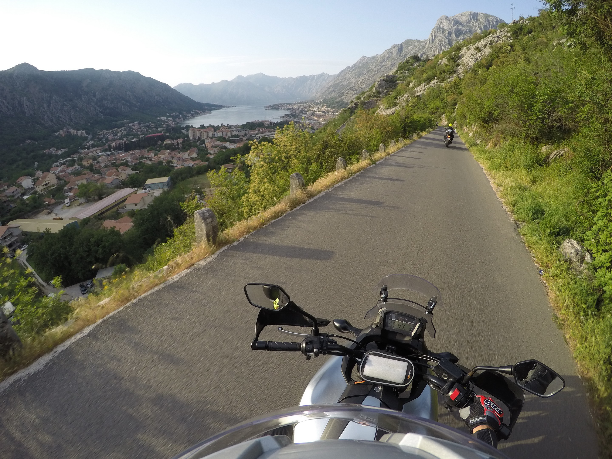

A motorozásra mindig kikapcsolódásként tekintettem. Annak ellenére, hogy időszakos a használata, a nyári időszakban maximálisan kihasználtam a jobbnál-jobb utazási lehetőségeket. Jelenlegi motorommal több országban, és olyan utakon jártam, ami autóval megközelíthetetlen lett volna.
